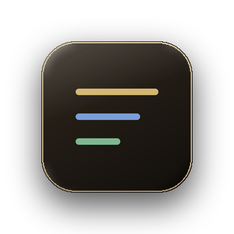
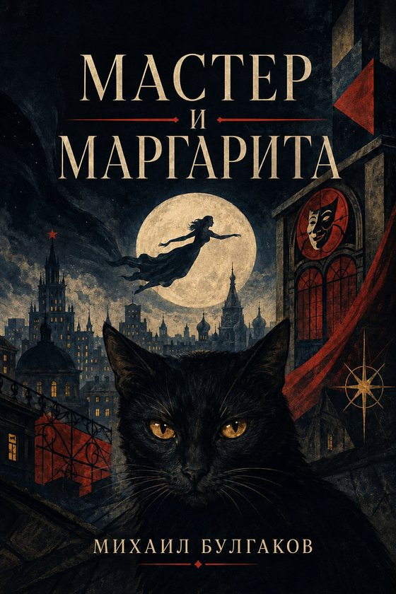
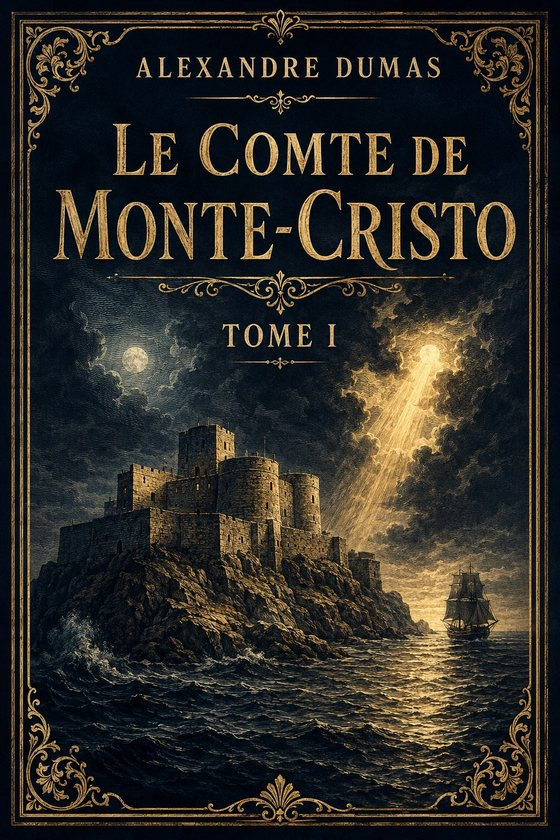
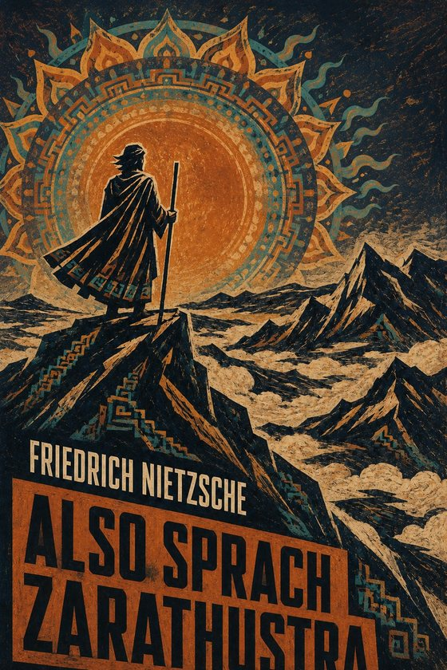

Dumas · Le Comte de Monte-Cristo
Wische über den Satz.

Jeder Satz liegt in vier Fassungen vor: Original, B1, A1 und Übersetzung. Bleibst du hängen, wischst du über den Satz – und er wird leichter. Ein Wisch zurück, und du liest wieder das Original.
Jeder Wisch nach links nimmt dir ein Stück Schwierigkeit ab – ohne dass sich der Inhalt ändert. Schwere Wörter im Original sind direkt im Satz erklärt.
Comme d’habitude, un pilote côtier partit aussitôt du port, rasa le château d’If, et alla aborder le navire entre le cap de Morgion et l’île de Rion.
Comme d’habitude, un pilote côtier est parti aussitôt du port. Il a rasé le château d’If, puis il est allé aborder le navire entre le cap de Morgion et l’île de Rion.
Comme toujours, un pilote est parti du port. Il est passé près du château d’If. Il a rejoint le bateau entre Morgion et Rion.
Wie gewöhnlich lief sogleich ein Küstenlotse aus dem Hafen aus, fuhr dicht am Château d’If vorbei und ging zwischen dem Kap Morgion und der Insel Rion an Bord des Schiffes.
Drei Werke im vollständigen Originaltext, Satz für Satz in vier Fassungen.

Michail Bulgakow · Original: Russisch
Мастер и Маргарита

Alexandre Dumas · Original: Französisch
Le Comte de Monte-Cristo

Friedrich Nietzsche · Original: Deutsch
Also sprach Zarathustra
Lies in der leichtesten Fassung. Kurze Sätze und Grundwortschatz tragen dich durch die Geschichte. Wo es hakt, wischst du zur Übersetzung.Startfassung: Leicht
Lies in der mittleren Fassung. Bei kniffligen Sätzen wischst du eine Stufe tiefer, bei leichten hinauf zum Original.Startfassung: Mittel
Lies den Text, wie der Autor ihn geschrieben hat. Schwere Wörter sind erklärt, die leichteren Fassungen bleiben einen Wisch entfernt.Startfassung: Original